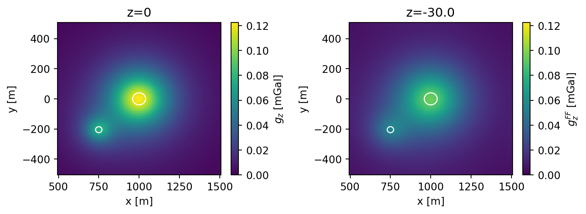
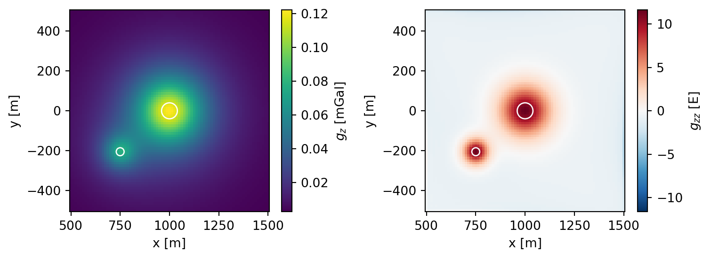
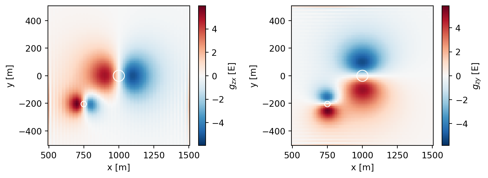
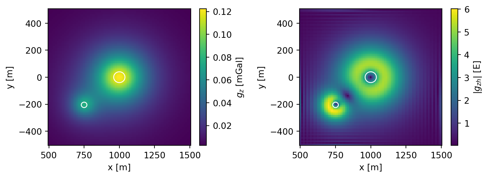
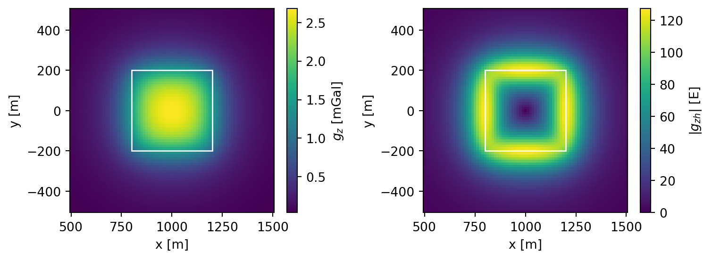

import numpy as np
import matplotlib.pyplot as plt
import matplotlib.patches as patches
import xarray as xr7 Feldtransformationen
TippLernziele
- Verstehen und Anwenden der Feldtransformationen in der Gravimetrie
- Beispiele: Kugel und Quader
Feldtransformationen erleichtern die Deutung der gemessenen Felddaten.
Hilfreich ist die Darstellung des Potentials (oder seiner Ableitungen) über ein Fourierintegral. Das eröffnet weitreichende Möglichkeiten zur Transformation von Potentialfeldgrößen in übersichtlicher und klarer Form.
Ansatz:
\[ V(x,y,z) = \frac{1}{4 \pi^{2}} \iint S(u,v) \, e^{ z \sqrt{ u^{2}+v^{2} } }e^{ i(ux + vy) }\,\dd{u}\,\dd{v} \]
Differenzieren unter dem Integral bestätigt Gültigkeit der Laplace-Gleichung.
Das Potential verschwindet für \(z \to -\infty\).
\(S(u,v)\) ist das 2D-Fourier-Spektrum des Potentials in der Ebene \(z=0\).
Die Größen \(u\) und \(v\) sind die zur \(x\)- bzw. \(y\)-Richtung gehörenden Wellenzahlen.
Durch Differentiation kann man die Spektren der Ableitungen der Potentialfunktion auf \(S(u, v)\) zurückführen.
\[ \frac{ \partial V }{ \partial z } = \frac{1}{4 \pi^{2}} \iint \sqrt{ u^{2}+v^{2} } \,S(u,v) \, e^{ z \sqrt{ u^{2}+v^{2} } }e^{ i(ux + vy) }\,\dd{u}\,\dd{v} \] oder kurz \[ S_{z}(u,v) = \Phi_{z}(u,v) S(u,v) = \mathcal F\{V_{z}(x,y,0); u, v\} \] \(S_{z}(u,v)\) ist das 2D-Spektrum von \(V_{z}(x,y,0)\). Der Spektraloperator (oder auch die Übertragungsfunktion) der vertikalen Ableitung lautet \[ \Phi_{z}(u,v) = \sqrt{ u^{2} + v^{2} }. \tag{7.1}\] Auf ähnliche Weise erhalten wir \[ \Phi_{x}(u,v) = iu, \qquad \Phi_{y}(u,v) = i v \tag{7.2}\] und \[ S_{x} = \Phi_{x} S, \quad S_{y}=\Phi_{y}S, \quad S_{xz}=\Phi_{z}S_{x}=\Phi_{x}S_{z} \quad\text{ etc.} \]
7.1 Feldfortsetzung nach oben
Eine bedeutende Feldtransformation ist die Feldfortsetzung. Sie beruht auf der Spektraldarstellung \[ V(x,y,-h) = = \frac{1}{4 \pi^{2}} \iint S(u,v) \, e^{ -h \sqrt{ u^{2}+v^{2} } }e^{ i(ux + vy) }\,\dd{u}\,\dd{v}, \] woraus ersichtlich wird, dass \[ \Phi_{FF} = e^{ -h \sqrt{ u^{2}+v^{2} } } \tag{7.3}\] die Übertragungsfunktion der Feldfortsetzung ist.
Die Feldfortsetzung berechnet auf der Grundlage einer in \(z=0\) flächenhaft vorliegenden Messgröße ihren Wert in der Ebene \(z=-h, h>0\).
Wir erkennen an den Eigenschaften der Übertragungsfunktion (reellwertig), dass das Phasenspektrum nicht verändert wird. Die Amplitude der Messgröße in der Fortsetzungsebene wird exponentiell gedämpft, kurze Wellenlängen (große Werte von \(u\) und \(v\)) werden mit zunehmender Fortsetzungshöhe unterdrückt. Dies ist die Wirkung eines Tiefpassfilters.
HinweisBeispieldatensatz
Wir erzeugen uns einen Datensatz. Dieser enthält die \(z\)-Komponente \(g_{z}\) der Schwerebeschleunigung als Funktion der horizontalen Positionen im Koordinatengitter.
Code anzeigen
nx = 81
ny = 81
x = np.linspace(500, 1500, nx)
dx = (x[-1] - x[0]) / (nx - 1)
y = np.linspace(-500, 500, ny)
dy = (y[-1] - y[0]) / (ny - 1)
z = 0.0
X, Y = np.meshgrid(x, y)
density = 2700.0
sp1 = (1000.0, 0.0, 200.0, 40.0, density)
sp2 = (750.0, -205.0, 100.0, 20.0, density)
G = sphere(X, Y, z, *sp1)
G += sphere(X, Y, z, *sp2)
level= 30.0
G2 = sphere(X, Y, -level, *sp1)
G2 += sphere(X, Y, -level, *sp2)
gz = xr.DataArray(
data=G,
dims=["y", "x"],
coords={
"x": ("x", x, {"units": "m"}),
"y": ("y", y, {"units": "m"})},
attrs={"units": "mGal", "long_name": "$g_{z}$", "description": "Vertical gravitational acceleration"}
)
data = xr.Dataset({"g_z": gz})
data["g_z_level"] = (("y", "x"), G2)Zur korrekten Anwendung der Feldtransformationen benötigen wir die Wellenzahlen \(u\) und \(v\). Im Kontext der Geophysik benutzen wir die Bezeichnungen \(k_{x}\) bzw. \(k_{y}\).
Die Wellenzahlen bzgl. \(x\) und \(y\) ergeben sich jeweils aus der Beziehung \[ k = \frac{2 \pi}{\lambda} \]
HinweisBerechnung der Wellenzahlen
Wie erhalten wir die Wellenlängen \(\lambda\)?
Wir haben mit \(x_{n} = n \Delta x,\ n=0,\dots, N-1\):
- \(N\) Samples je Koordinatenrichtung
- ein konstantes Abtastintervall \(\Delta x\) in m.
Die Länge des Signals ist \(L = N \Delta x\).
Die FFT (Fast Fourier Transform) berechnet \(N\) komplexwertige Fourierkoeffizienten. Jeder dieser Koeffizienten korrespondiert mit einer bestimmten diskreten Frequenz (für Zeitsignale) oder Wellenzahl (für räumliche Abstastungen).
Für das konstante Wellenzahlinkrement \(\Delta k\) gilt
\[ \Delta k = \frac{1}{L} = \frac{1}{N \Delta x}. \]
Die meisten numerischen FFT-Bibliotheken liefern die Koeffizienten in folgender Reihenfolge:
- positive Frequenzen aufsteigend
- negative Frequenzen aufsteigend
Hier hlft die Numpy-Funktion fftfreq.
import numpy as np
k = np.fft.fftfreq(N, d=dx)k ist ein Array der Länge N mit den Fourierkoeffizienten in der oben angegebenen Reihenfolge.
Aus der Anzahl der Stützstellen je Koordinatenrichtung sowie dem jeweiligen räumlichen Abtastintervall folgt formal
f = [0, 1, ..., N/2-1, -N/2, ..., -1] / (d*N) wenn N gerade
f = [0, 1, ..., (N-1)/2, -(N-1)/2, ..., -1] / (d*N) wenn N ungeradeN = 8
kx = np.concatenate([
np.arange(0, np.floor((N - 1) / 2) + 1, dtype=int),
np.arange(-np.ceil((N - 1) / 2), 0, dtype=int)
])
kxCode anzeigen
N = 7
kx = np.concatenate([
np.arange(0, np.floor((N - 1) / 2) + 1, dtype=int),
np.arange(-np.ceil((N - 1) / 2), 0, dtype=int)
])
print(f"N={N} k={kx}")
N = 8
kx = np.concatenate([
np.arange(0, np.floor((N - 1) / 2) + 1, dtype=int),
np.arange(-np.ceil((N - 1) / 2), 0, dtype=int)
])
print(f"N={N} k={kx}")N=7 k=[ 0 1 2 3 -3 -2 -1]
N=8 k=[ 0 1 2 3 -4 -3 -2 -1]fftfreq liefert für die beiden Fälle identische Ergebnisse:
Code anzeigen
print(f"N=8: k={np.fft.fftfreq(8, d=1) * 8}")
print(f"N=7: k={np.fft.fftfreq(7, d=1) * 7}")N=8: k=[ 0. 1. 2. 3. -4. -3. -2. -1.]
N=7: k=[ 0. 1. 2. 3. -3. -2. -1.]Damit können wir jetzt unsere Wellenzahlen auf der Grundlage der im xarray enthaltenen Informationen bereitstellen.
Code anzeigen
kx = np.fft.fftfreq(gz.sizes["x"], d=dx) * 2 * np.pi
ky = np.fft.fftfreq(gz.sizes["y"], d=dy) * 2 * np.pi
KX = kx[np.newaxis, :]
KY = ky[:, np.newaxis]Die Feldfortsetzung berechnen wir wie oben definiert mit Hilfe der Übertragungsfunktion der Feldfortsetzung (7.3).
Code anzeigen
gz_spec = np.fft.fft2(gz.values)
gz_ff = np.real(np.fft.ifft2(gz_spec * np.exp(-level * np.sqrt(KX**2 + KY**2))))
data["g_z_ff"] = (["y", "x"], gz_ff)
data["g_z_ff"].attrs["units"] = "mGal"
data["g_z_ff"].attrs["long_name"] = "$g_{z}^{FF}$"Die im xarray-Datensatz data enthaltenen Daten stellen wir grafisch dar:
Code anzeigen
circle1 = np.array(sp1)
circle2 = np.array(sp2)
fig, (ax1, ax2) = plt.subplots(1, 2, figsize=(8, 3))
cm = np.max(data["g_z"])
data["g_z"].plot(ax=ax1, vmin=0.0, vmax=cm)
ax1.set_title("z=0")
data["g_z_ff"].plot(ax=ax2, vmin=0.0, vmax=cm)
ax2.set_title(f"z={-level}")
ax1.add_patch(patches.Circle(
(circle1[0], circle1[1]), circle1[3],
edgecolor='white', facecolor='none'))
ax1.add_patch(patches.Circle(
(circle2[0], circle2[1]), circle2[3],
edgecolor='white', facecolor='none'))
ax2.add_patch(patches.Circle(
(circle1[0], circle1[1]), circle1[3],
edgecolor='white', facecolor='none'))
ax2.add_patch(patches.Circle(
(circle2[0], circle2[1]), circle2[3],
edgecolor='white', facecolor='none'))
fig.tight_layout()
Die Daten im Fortsetzungsniveau h=30.0 m haben geringere Amplituden und sind glatter. Kurze Wellenlängen werden durch die Feldfortsetzung unterdrückt.
7.2 Vertikalableitung
Wir wenden die Übertragungsfunktion der Vertikalableitung 7.1 an.
Als Resultat erhalten wir \[ g_{zz} = \frac{ \partial g_{z} }{ \partial z } \]
Code anzeigen
gzz = 1e4 * np.real(np.fft.ifft2(gz_spec * np.sqrt(KX**2 + KY**2)))
data["g_z_z"] = (["y", "x"], gzz)
data["g_z_z"].attrs["units"] = "E"
data["g_z_z"].attrs["long_name"] = "$g_{zz}$"Code anzeigen
fig, (ax1, ax2) = plt.subplots(1, 2, figsize=(8, 3))
data["g_z"].plot(ax=ax1)
data["g_z_z"].plot(ax=ax2)
ax1.add_patch(patches.Circle(
(circle1[0], circle1[1]), circle1[3],
edgecolor='white', facecolor='none'))
ax1.add_patch(patches.Circle(
(circle2[0], circle2[1]), circle2[3],
edgecolor='white', facecolor='none'))
ax2.add_patch(patches.Circle(
(circle1[0], circle1[1]), circle1[3],
edgecolor='white', facecolor='none'))
ax2.add_patch(patches.Circle(
(circle2[0], circle2[1]), circle2[3],
edgecolor='white', facecolor='none'))
fig.tight_layout()
Hinweis
Die Ableitungen der Schwere werden in der Einheit Eötvös (Formelzeichen E) angegeben:
\[ \require{units} [g_{zz}] = \units[1]{E} = \units[10^{-9}]{s^{-2}} = \units[0.1]{mGal/km} \]
7.3 Horizontalableitungen
Wir wenden die jeweiligen Übertragungsfunktionen der Horizontalalableitungen 7.2 an.
Code anzeigen
gzx = 1e4 * np.real(np.fft.ifft2(gz_spec * 1j * KX))
gzy = 1e4 * np.real(np.fft.ifft2(gz_spec * 1j * KY))
data["g_z_x"] = (["y", "x"], gzx)
data["g_z_y"] = (["y", "x"], gzy)
data["g_z_x"].attrs["units"] = "E"
data["g_z_x"].attrs["long_name"] = "$g_{zx}$"
data["g_z_y"].attrs["units"] = "E"
data["g_z_y"].attrs["long_name"] = "$g_{zy}$"Code anzeigen
fig, (ax1, ax2) = plt.subplots(1, 2, figsize=(8, 3))
data["g_z_x"].plot(ax=ax1)
data["g_z_y"].plot(ax=ax2)
ax1.add_patch(patches.Circle(
(circle1[0], circle1[1]), circle1[3],
edgecolor='white', facecolor='none'))
ax1.add_patch(patches.Circle(
(circle2[0], circle2[1]), circle2[3],
edgecolor='white', facecolor='none'))
ax2.add_patch(patches.Circle(
(circle1[0], circle1[1]), circle1[3],
edgecolor='white', facecolor='none'))
ax2.add_patch(patches.Circle(
(circle2[0], circle2[1]), circle2[3],
edgecolor='white', facecolor='none'))
fig.tight_layout()
7.4 Betrag des Horizontalgradienten
Der Betrag des Horizontalgradienten ist \[ g_{zh} := \left|\frac{ \partial g }{ \partial h } \right| = \sqrt{\left(\frac{ \partial g_{z} }{ \partial x }\right)^{2} + \left(\frac{ \partial g_{z} }{ \partial y }\right)^{2}} \]
Code anzeigen
data["g_z_h"] = (["y", "x"], np.sqrt(gzx**2 + gzy**2))
data["g_z_h"].attrs["units"] = "E"
data["g_z_h"].attrs["long_name"] = "$|g_{zh}|$"
fig, (ax1, ax2) = plt.subplots(1, 2, figsize=(8, 3))
data["g_z"].plot(ax=ax1)
data["g_z_h"].plot(ax=ax2)
ax1.add_patch(patches.Circle(
(circle1[0], circle1[1]), circle1[3],
edgecolor='white', facecolor='none'))
ax1.add_patch(patches.Circle(
(circle2[0], circle2[1]), circle2[3],
edgecolor='white', facecolor='none'))
ax2.add_patch(patches.Circle(
(circle1[0], circle1[1]), circle1[3],
edgecolor='white', facecolor='none'))
ax2.add_patch(patches.Circle(
(circle2[0], circle2[1]), circle2[3],
edgecolor='white', facecolor='none'))
fig.tight_layout()
Das folgende Beispiel zeigt den Betrag des Horizontalgradienten am Beispiel eines rechtwinkligen Quaders:
Code anzeigen
prism = (800.0, 1200.0, -200.0, 200.0, 80.0, 120.0)
rec = np.array(prism)
GP = gz_prism(X, Y, z, prism, density)
data["g_z_p"] = (["y", "x"], GP)
data["g_z_p"].attrs["units"] = "mGal"
data["g_z_p"].attrs["long_name"] = "$g_{z}$"
GP_spec = np.fft.fft2(GP)
GPzx = 1e4 * np.real(np.fft.ifft2(GP_spec * 1j * KX))
GPzy = 1e4 * np.real(np.fft.ifft2(GP_spec * 1j * KY))
data["g_z_ph"] = (["y", "x"], np.sqrt(GPzx**2 + GPzy**2))
data["g_z_ph"].attrs["units"] = "E"
data["g_z_ph"].attrs["long_name"] = "$|g_{zh}|$"
fig, (ax1, ax2) = plt.subplots(1, 2, figsize=(8, 3))
data["g_z_p"].plot(ax=ax1)
data["g_z_ph"].plot(ax=ax2)
ax1.add_patch(patches.Rectangle([rec[0], rec[2]], rec[1] - rec[0], rec[3] - rec[2],
edgecolor='white', facecolor='none'))
ax2.add_patch(patches.Rectangle([rec[0], rec[2]], rec[1] - rec[0], rec[3] - rec[2],
edgecolor='white', facecolor='none'))
fig.tight_layout()